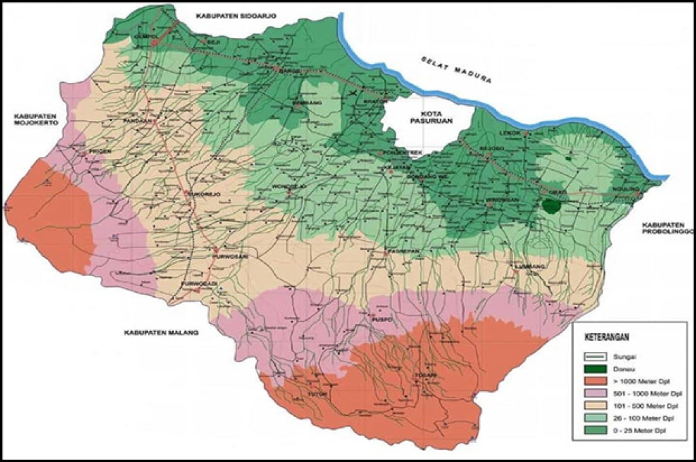

Sejarah

Pasuruan adalah wilayah di Jawa Timur yang letaknya berada di sebelah tenggara Kota Surabaya. Wilayah Kabupaten Pasuruan berbatasan dengan Kabupaten Sidoarjo di sebelah utara, Kabupaten Probolinggo di sebelah timur, Kabupaten
Malang di sebelah selatan, dan Kabupaten Mojokerto di sebelah barat. Pasuruan merupakan salah satu kabupaten tertua di Jawa Timur yang telah eksis sejak tahun 929, atau berusia hampir 1.100 tahun. Sedangkan Kota Pasuruan berdiri
pada tahun 1686, bertepatan dengan pengangkatan Untung Suropati sebagai Adipati Pasuruan.
Nama Pasuruan sendiri berasal dari kata Pasuruhan, sebuah kata yang diucapkan oleh Raja Hayam Wuruk saat ia sedang mengunyah sirih waktu berkunjung ke Kerajaan Mataram. Sejak saat itu, Raja Kerajaan Mataram Mpu Sindok menamai
tempat pertemuan mereka dengan nama Pasuruhan Seiring berjalannya waktu, orang-orang lebih suka menyebutnya dengan nama Pasuruan.
Geografis

Kabupaten Pasuruan berada pada posisi sangat strategis yaitu jalur regional juga jalur utama perekonomian Surabaya – Malang dan Surabaya – Banyuwangi. Hal tersebut menguntungkan dalam pengembangan ekonomi dan membuka peluang
investasi di Kabupaten Pasuruan. Posisi geografi Kabupaten Pasuruan terletak antara 112°33`55” hingga 113°30`37” Bujur Timur dan antara 7°32`34” hingga 8°30`20” Lintang Selatan. Kabupaten Pasuruan mempunyai luas wilayah
147.401,50 Ha (3,13 % luas Provinsi Jawa Timur), yang terdiri dari 24 Kecamatan, 24 Kelurahan, 341 Desa dan 1.694 Pedukuhan. Batas-batas wilayah Pasuruan adalah:
- Utara : Kabupaten Sidoarjo dan Selat Madura
- Selatan : Kabupaten Malang
- Timur : Kabupaten Probolinggo
- Barat : Kabupaten Mojokerto
Di wilayah Kabupaten Pasuruan mengalir enam sungai yang besar yang bermuara di Selat Madura, yaitu:
- Sungai Lawean : Bermuara di Desa Penunggul, Kec. Nguling
- Sungai Rejoso : Bermuara di Wilayah Kec. Rejoso
- Sungai Gembong : Bermuara di Wilayah kota Pasuruan
- Sungai Welang : Bermuara di Desa Pulokerto. Kec, Kraton
- Sungai Masangan : Bermuara di Desa Raci, Kec. Bangil
- Sungai Kedunglarangan : Bermuara di Desa Kalianyar, Kec. Bangil
Keadaan demografi Kabupaten Pasuruan relatif besar. Tercatat 1.510.261 jiwa, yang terdiri dari laki-laki 747.376 jiwa dan perempuan 762.885 jiwa (data akhir tahun 2010 BPS Kabupaten Pasuruan) dengan kepadatan 1024,59 jiwa/km².
Keanekaragaman penduduk sebagian besar suku Jawa, suku Madura, Suku Tengger dan keturunan asing antara lain : Cina, Arab, India. Agama yang dianut masyarakat yaitu: Islam, Kristen Protestan, Katholik, Budha dan Hindu.
Wisata
Tempat wisata di Pasuruan dikenal dengan pemandangan alamnya yang memanjakan mata. Karena letak geografisnya yang berada di dataran rendah dan dikelilingi pegunungan, tak heran jika melahirkan berbagai wisata menarik.
Kebun Raya Purwodadi

Salah satu wisata Pasuruan yang sudah buka adalah Kebun Raya Purwodadi. Ini adalah sebuah pusat konservasi berbagai tanaman langka di bawah naungan Lembaga Ilmu Pengetahuan Indonesia (LIPI). Tempatnya asri dan dikelilingi
banyaknya pepohonan hijau. Tak heran, banyak orang berpiknik sambil melepas penat. Bahkan, sebagian wisatawan menjadikan tempat ini sebagai spot foto pre-wedding, lho.
Bromo Forest

Bromo Forest sebagai gunung berapi aktif merupakan bagian dari wisata di Pasuruan yang tak kalah keren. Letaknya berada di beberapa wilayah, yakni Probolinggo, Pasuruan, Lumajang, dan Malang. Dikenal dengan sebutan Bromo
Forest Park Tosari, ada berbagai spot foto keren yang bisa dipilih. Udara yang sejuk dan angin sepoi-sepoi cocok dinikmati saat sore hari menuju matahari terbenam.
Pemandian Banyu Biru

Pemandian Banyu Biru adalah wisata Pasuruan yang hanya berjarak 25 km atau 40 menit dari pusat kota. Pemandian ini telah dikenal sejak zaman penjajahan Belanda dan punya cerita sejarah di dalamnya, lho. Berkat fasilitas
lengkap dan suasana alam yang sejuk, pemandian ini selalu ramai dipadati pengunjung saat akhir pekan. Konon, di kolam ini terdapat ikan-ikan berukuran besar yang dikeramatkan, Moms.